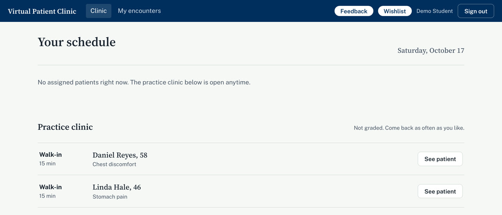
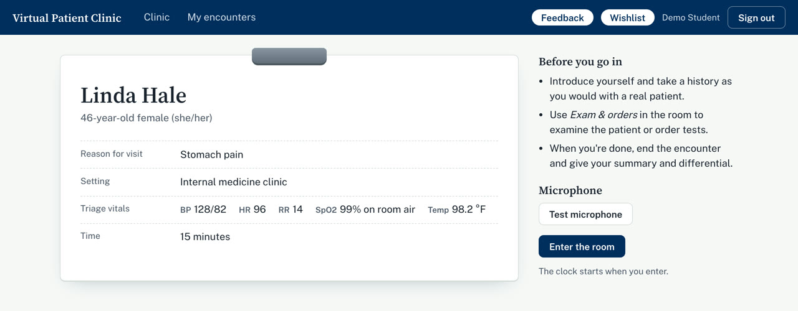
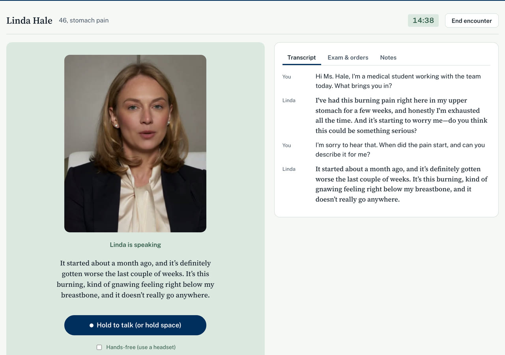
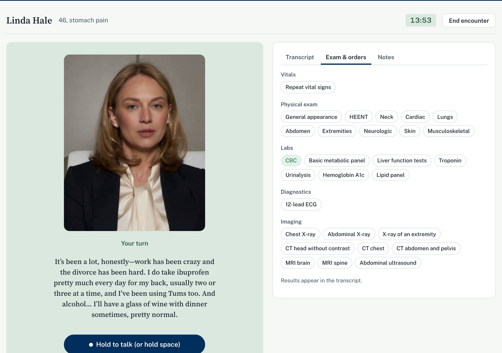
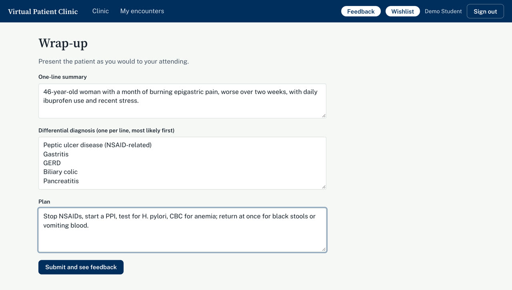
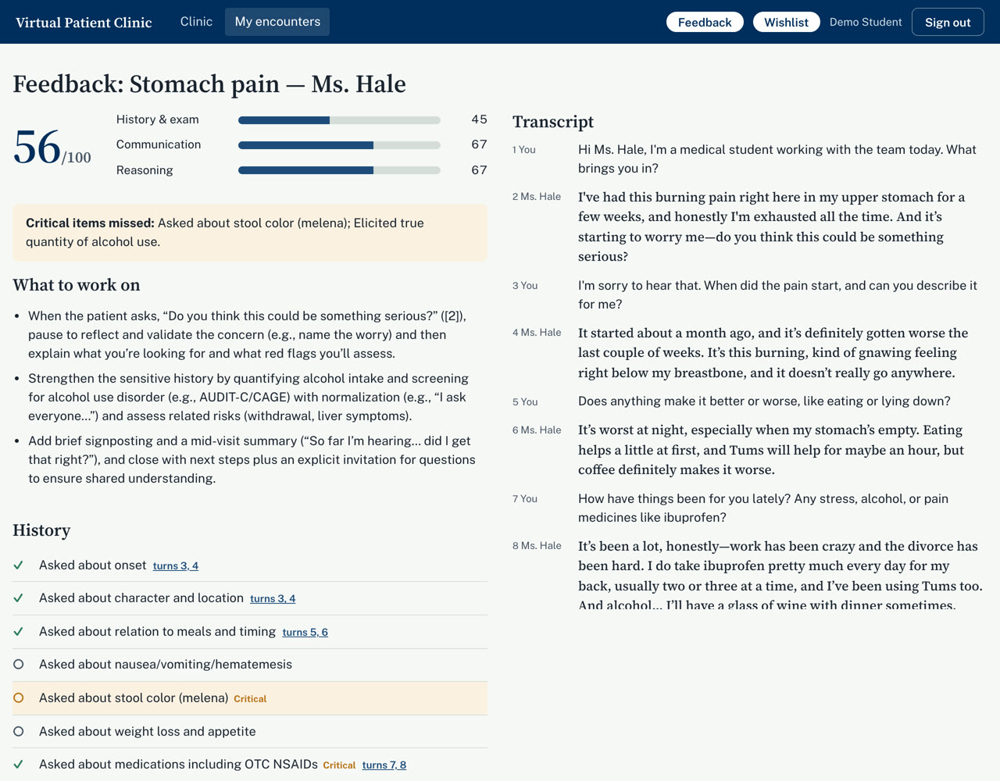
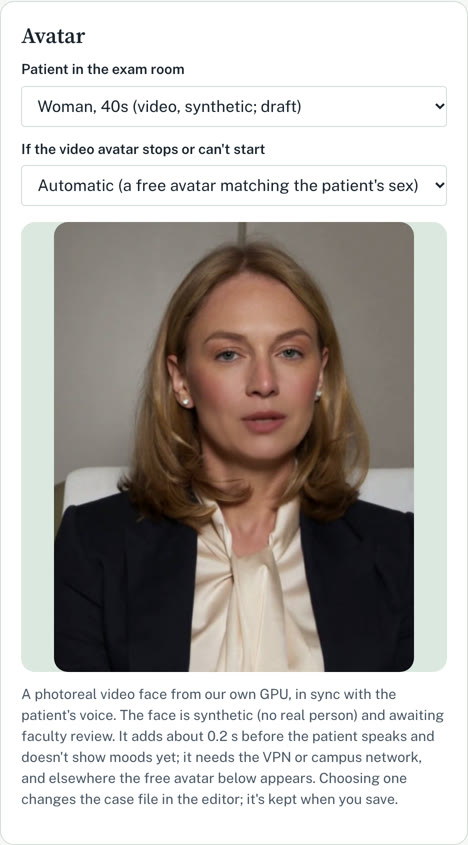
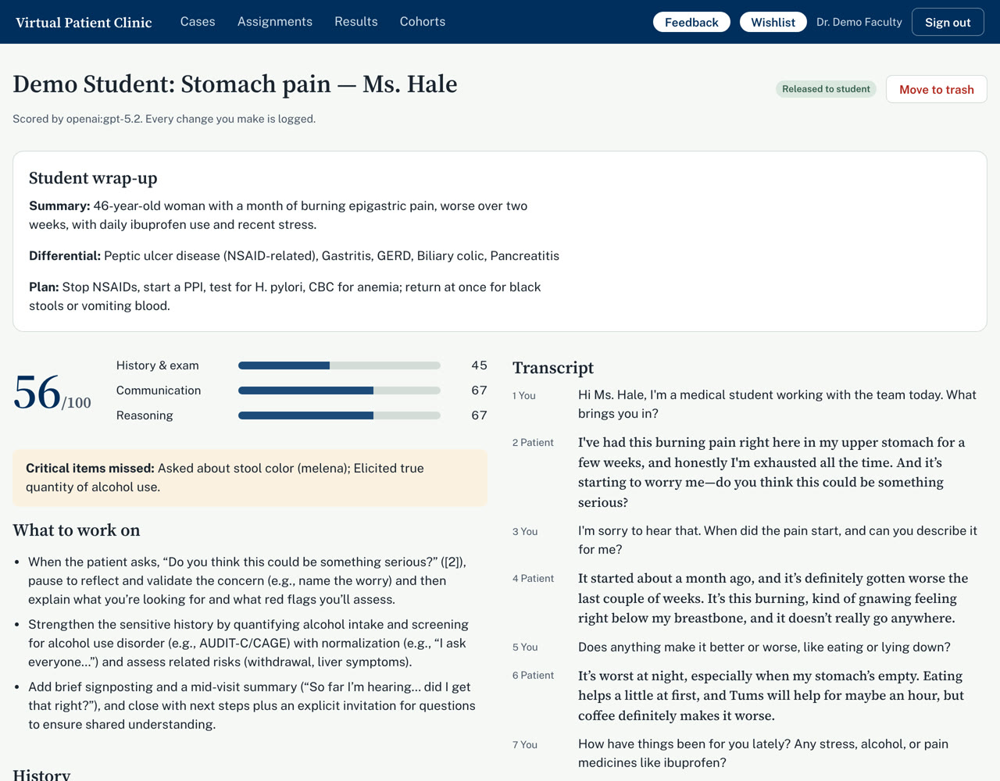

Before you start
- Open virtual-patient.ml-capstone.cs.byu.edu in Chrome or Edge on a laptop. Ask Quinn Snell for an account.
- Connect to the BYU CS VPN or the campus network first; the site isn't reachable from elsewhere yet.
- Use a headset if you can. Talking works with the laptop's microphone too: hold the space bar while you speak.
- The cases are draft clinical content awaiting School of Medicine review, and the video faces are generated: no real person, and also awaiting review.
A student encounter
1Pick a patient
The clinic lists any patients a course has assigned, and a practice clinic that's open anytime and not graded.


2Read the door chart
Reason for visit, setting, triage vitals and the time allowed, as on a real clinic door. Students can test their microphone, then enter the room; the clock starts then.


3Interview the patient
Students speak (hold the space bar, or hands-free with a headset) or type. The patient answers in her own voice about two seconds later, and her face moves with her words.
She shares what the case allows, when it's asked well. Some details come only if the student builds rapport. She also reacts to how the student talks: rushed questions and interruptions make her shorter and more guarded.
Faculty choose each case's patient: a photoreal video face, an animated 3D one, or a portrait.


4Examine and order tests
The same menu of exams, labs and imaging appears for every case, so it never hints at the diagnosis. Results appear in the transcript; ordering imaging can show the case's image.


5Present the patient
After ending the encounter, students give a one-line summary, a ranked differential and a plan, as they would to an attending.


6Read the feedback
A score for history and exam, communication (based on the Calgary-Cambridge guide) and clinical reasoning. Critical items that were missed are flagged, and the student gets three concrete things to work on.
Every checklist item links to the turns in the transcript where it happened, so students and faculty can see the evidence.
For assigned encounters, faculty can hold feedback until they've reviewed it.


What faculty do
7Write and tune cases
Each case defines the patient (history, personality, what they'll reveal and when), the findings, and the checklist. Write one from a paragraph with AI drafting, or edit the case file directly.
The case editor also sets the patient's voice and face, with a preview.


8Review encounters
Results lists every encounter. A review shows the student's wrap-up, the scores and the full transcript. Faculty can override any score (every change is logged) and release the feedback to the student.


Try it in ten minutes
- Sign in, open the practice clinic, and see Linda Hale (stomach pain) or Daniel Reyes (chest discomfort).
- Introduce yourself and take a history out loud. Ask about the pain, then about medicines, alcohol and stress. Notice what she volunteers and what she only tells you when asked well.
- Try interrupting her, or firing off quick questions, and see how she responds.
- Examine the abdomen and order a test or two from Exam & orders.
- End the encounter, give your summary and differential, and read the feedback. Click a checklist item's turns to see the evidence.
The Feedback and Wishlist buttons at the top of every page go straight to the team. We'd love to hear what you'd change.
Good to know
- Transcripts are kept; recordings of students' voices are not.
- The video faces run on BYU's own GPUs, so the patient's voice stays on our servers.
- The patient and the feedback come from a large language model (OpenAI, under BYU's license). Scores cite the transcript, and faculty can override any of them.
Known limits
- Two practice cases so far, both drafts.
- The video faces don't show moods yet, and up close their mouths are a little softer than the rest of the face.
- No hospital gowns, children, or child voices yet.
- The exam-room timer is a guide; it doesn't end the encounter.
- Coming next: instructors watching and steering a live encounter, test mode, and an oral presentation to an attending.